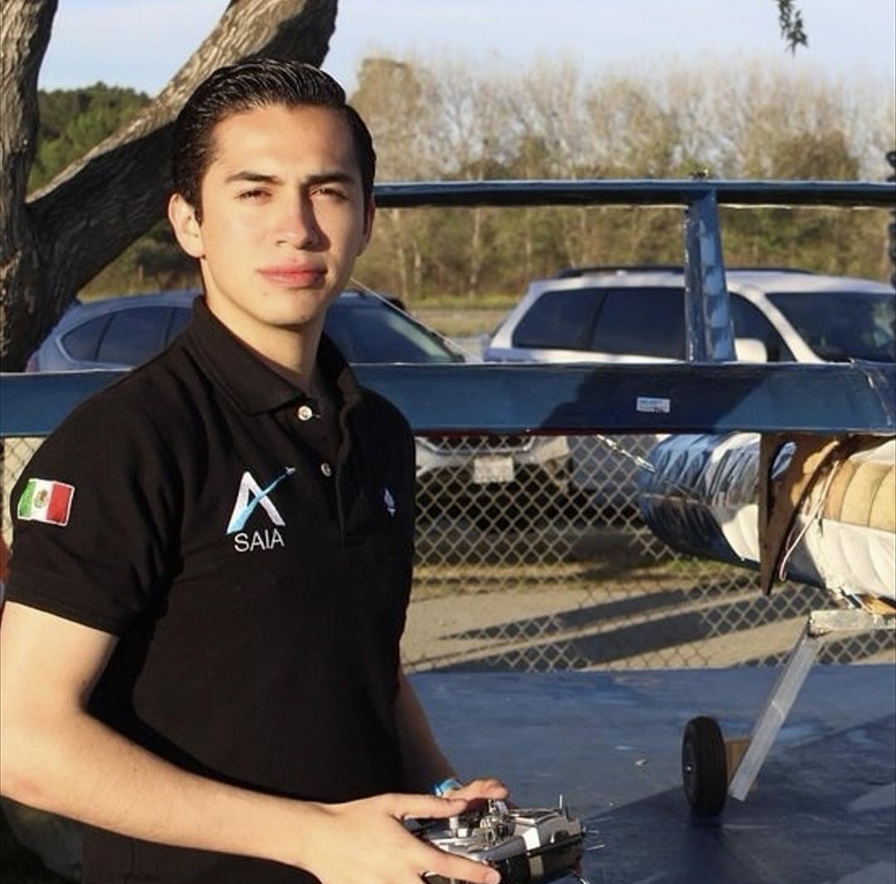
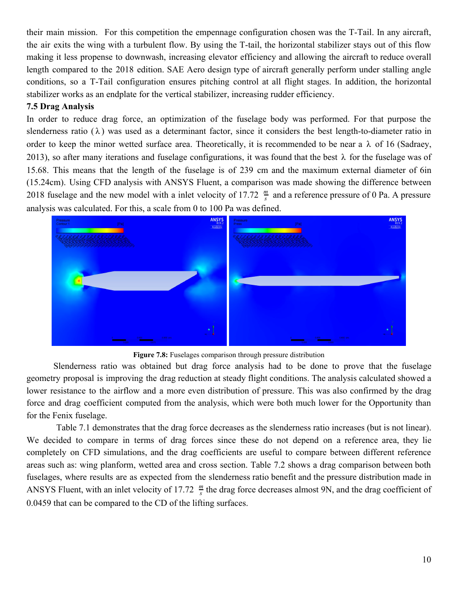
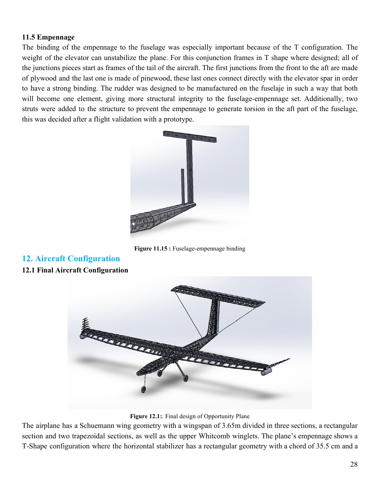
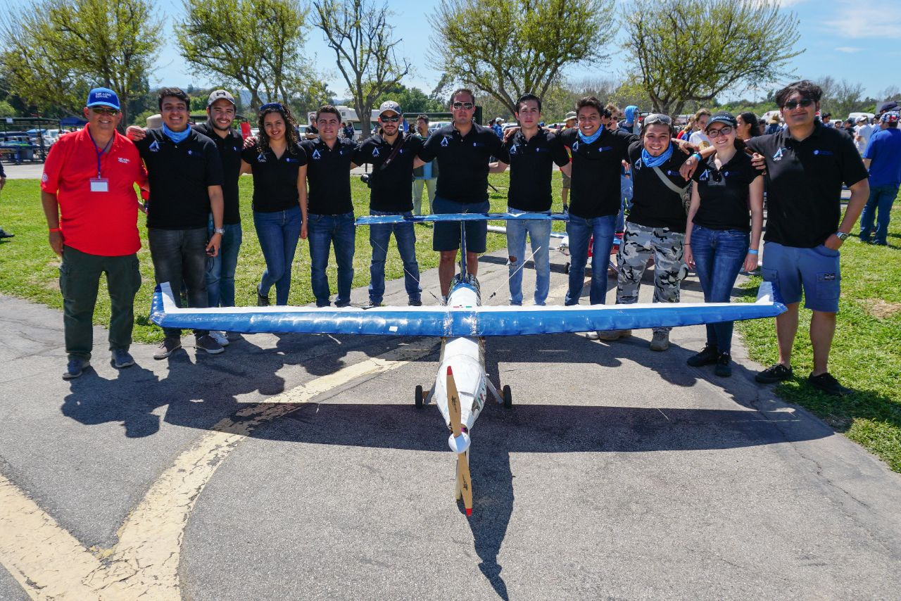
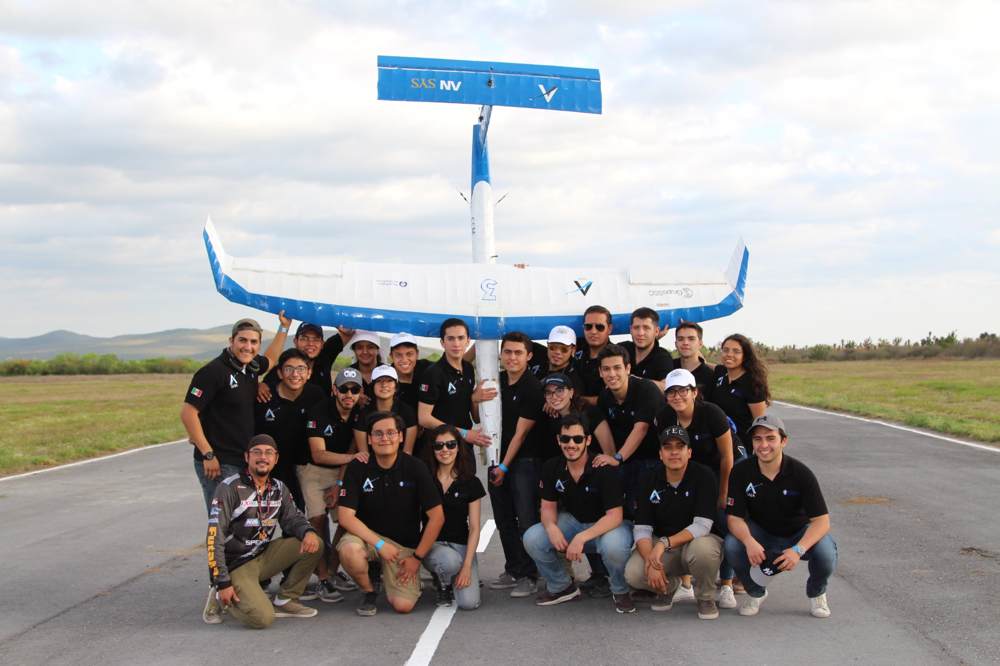
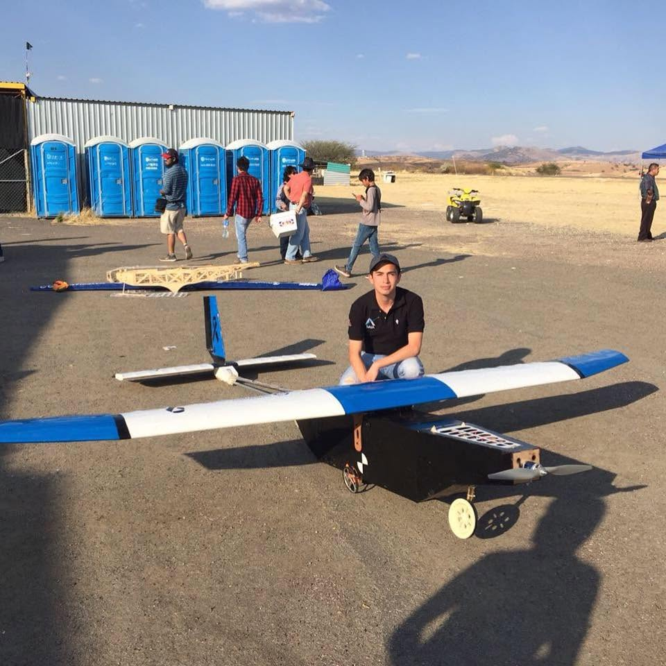

AIRCRAFT DESIGN · HARDWARE · LEADERSHIP
SAE Aero Design — Aircraft Design & Team Leadership
Design, build, test, and fly original electric RC cargo aircraft for national and international SAE Aero Design competitions.

Problem
Translate changing SAE mission requirements into an aircraft that can carry significant payload, meet takeoff and flight constraints, pass technical inspection, and perform reliably in competition.
My role
Served as Structures Lead and later Team Captain, organizing an interdisciplinary team of nearly 40 students across aerodynamics, stability & control, propulsion, structures, and manufacturing.
Workflow
Engineering contribution
Across the 2018 and 2019 aircraft, the team evaluated low-Reynolds-number airfoils, Schuemann wing geometries, winglets, static stability, control surfaces, propulsion combinations, payload performance, and lightweight structures. The 2019 design also introduced a more slender semi-monocoque fuselage and used ANSYS Fluent to compare the drag performance against the 2018 configuration.


Competition & team



Outcome
Led an interdisciplinary aircraft-development effort from requirements through design, manufacturing, testing, and competition. The team achieved consecutive 3rd-place finishes in Mexico and 11th overall at SAE Aero Design West in its first U.S. competition.